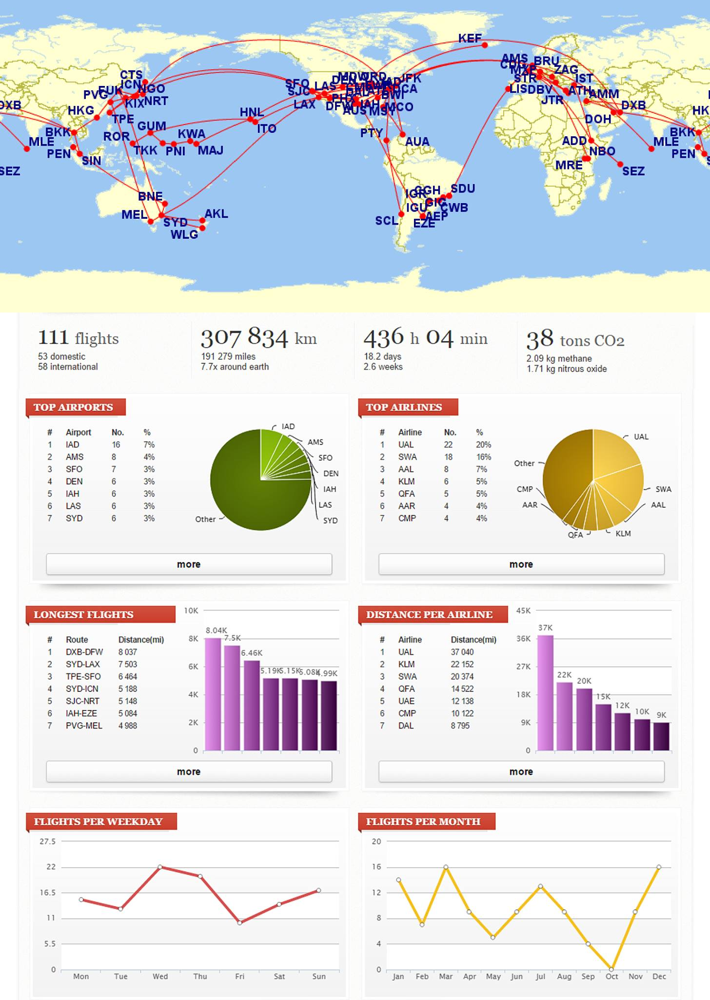

2015 - Travel Hacking Retrospective
A year of travel hacking. This is what 800,000 frequent flyer miles looks like.
111 flights over 191,000 miles / 300,000 km. 7.7 times around the globe by distance, crossing the Pacific six times and the Atlantic eight.
Thank you to each and every one of you for the memories we've made. Onwards to 2016!
